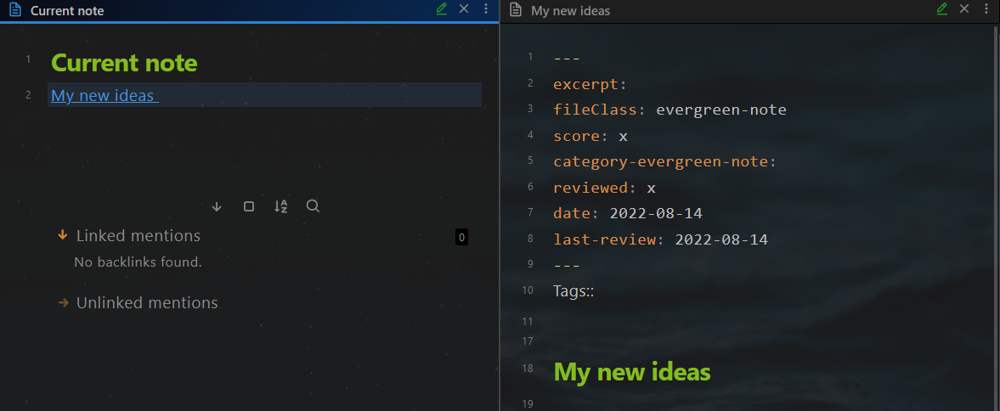
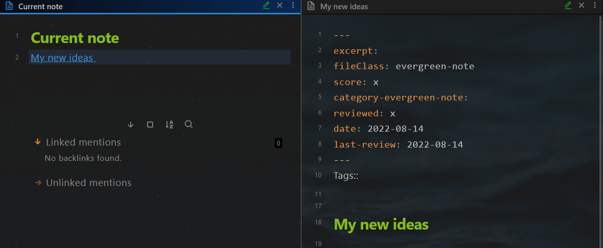

5 ways to create new notes
Depending on the note type, there are several ways to add new notes:
- Use shortcut
Ctrl + NorNew NoteButton - Use shortcut
Alt + N1 - Use shortcut
Ctrl + Q1 4 - Use buttons on the dashboards or on the notes 1 2 3
- Right-click the note folder 1
- Click on the day or week on the Calendar panel 3
Use shortcut Ctrl + N or New Note Button
Use case: Add a fleeting note quickly, and define the note type later.
- Create an empty note by pressing the shortcut
Ctrl + Nor theNew Notebutton on the File explorer panel

- Change the file name, start the writing
- later: Insert the template by pressing the shortcut
Alt + T - later: Move the note to the corresponding folder of the note type (e.g. "110_üèõPillars" for pillar note)
Use shortcut Alt + N
Use case: Add a note for a certain note type quickly.
- Create a new note from a template by pressing the shortcut
Alt + N

- Change the file name
- Later: Move the note to the corresponding folder according to the note type
Use shortcut Ctrl + Q
Use case: Add a note for a certain note type quickly, and insert the link at the same time
- press the shortcut
Ctrl + Qand select the note type


- Input the note title
 

Use buttons on the dashboards
Use case: Add a note for a certain note type, without moving the note later
- Open a dashboard note (e.g. Goal Management Dashboard)
- Click on the button on it
- A new note is created in the correct folder
- Change the file name

Right-click the note folder
Use case: Add a note for a certain note type, without moving the note later
- Expand the left sidebar and active the File explorer panel, if not yet
- Navigate to the note folder
- Right-click the note folder and create a new note using the context menu
- Change the file name
Click on the day or week on the Calendar panel
- Expand the right sidebar and active the calendar panel, if not yet
- Click on the day or on the week to create a new note